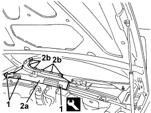
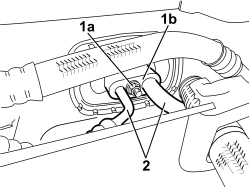
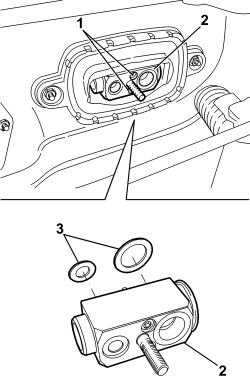
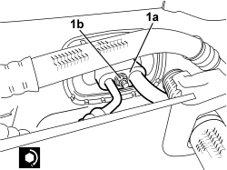

5040B30 EXPANSION VALVE (TUBE ORIFICE) - R+R
- Path
- Procedures > 50 AUXILIARY UNITS > 5040 AIR CONDITIONING CASING AND COMPONENTS > 5040B SYSTEM SAFETY CONTROL DEVICES > 5040B30 EXPANSION VALVE (TUBE ORIFICE) - R+R
- Kind
- repair procedure (removal / refitting; the operation number is the code)
- Applies to
- engines: 1.9 JTS, 2.2 JTS, 1.9 JTD 8V, 1.9 JTD 16V, 2.4 JTD 20V; all production periods
- Interactive page
- https://sloeber94.github.io/elrnDB/alfa/159/en/#/939010919
Applies to: engines: 1.9 JTS, 2.2 JTS, 1.9 JTD 8V, 1.9 JTD 16V, 2.4 JTD 20V; all production periods
 Removing
Removing
 Refitting
Refitting- Drain the coolant
Op. 0010T84 COOLANT FOR AIR CONDITIONING SYSTEM - DEHYDRATE AND REPRESSURIZE
Op. 7025A64 ENGINE COMPARTMENT GASKET - R.R.
1. Release the retaining buttons for the right half of the trim at the windscreen base using the special tool.
Tool | Description | Function | Validity |
|---|---|---|---|
1823015000 | Knife | Retainer removal |
2. Remove the right half trim at the base of the windscreen (2a) releasing the internal retainers (2b).

Applies to: engines: 1.9 JTS, 2.2 JTS, 1.9 JTD 8V, 1.9 JTD 16V, 2.4 JTD 20V; all production periods
1. Undo the nut (1a) and disconnect the connector (1b) pipes from the expansion valve.

Applies to: engines: 1.9 JTS, 2.2 JTS, 1.9 JTD 8V, 1.9 JTD 16V, 2.4 JTD 20V; all production periods
1. Undo the bolts fixing the expansion valve.
2. Extract the expansion valve.
3. Keep the gaskets.

Applies to: engines: 1.9 JTS, 2.2 JTS, 1.9 JTD 8V, 1.9 JTD 16V, 2.4 JTD 20V; all production periods
Refitting
Removing- Check that the expansion valve is not damaged.
- Place the new gaskets on the expansion valve then secure it in position using the bolts.
1. Connect the connector (1a) for the pipes to the expansion valve and secure it tightening the nut (1b) to the specified torque.
Component | Fastening | dia | Value (daNm) | Validity |
|---|---|---|---|---|
EXPANSION VALVE SIDE PIPE CONNECTOR | Nut | M8 | 1.8 ÷ 2.2 |

Applies to: engines: 1.9 JTS, 2.2 JTS, 1.9 JTD 8V, 1.9 JTD 16V, 2.4 JTD 20V; all production periods
- Place the right half trim in position at the base of the windscreen attaching the internal retainers, then secure it using the retaining buttons.
Op. 7025A64 ENGINE COMPARTMENT GASKET - R.R.
- Repressurize the coolant.
Op. 0010T84 COOLANT FOR AIR CONDITIONING SYSTEM - DEHYDRATE AND REPRESSURIZE
Topics linked from this page (3)
- 0010T84 COOLANT FOR AIR CONDITIONING SYSTEM - DEHYDRATE AND REPRESSURIZE
- 5040 AIR CONDITIONING CASING AND COMPONENTS
- 7025A64 ENGINE COMPARTMENT GASKET - R.R.